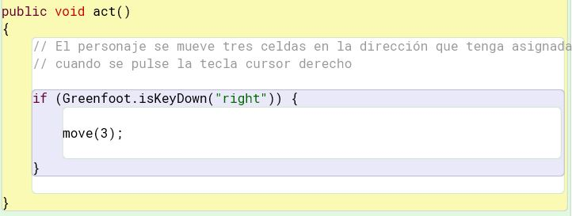
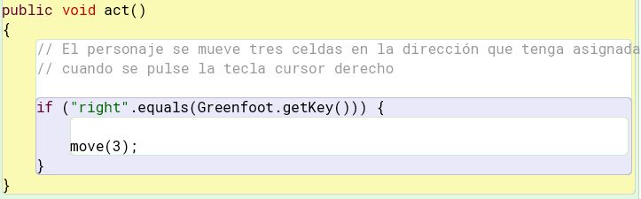
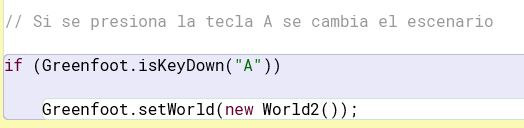
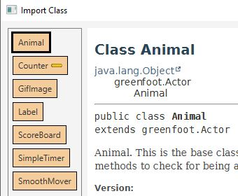
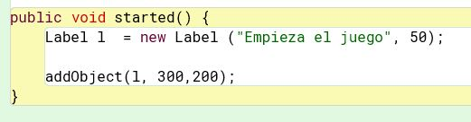
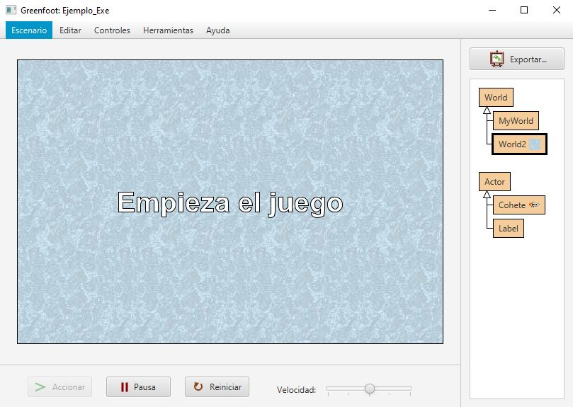

En esta sección se explicarán, a modo de guía, procedimientos útiles para implementar el funcionamiento del juego.
Proyecto programación y computación - Juego con greenfoot
4ª fase. Funcionamiento del juego (inicio, fin, puntuaciones,...)
Controlar la pulsación de una tecla
Para saber qué tecla se ha pulsado tenemos que usar la función Greenfoot.isKeyDown(String keyname) o Greenfoot.getKey(). En ambos casos es necesario conocer el nombre que se le asigna a cada tecla:
- "a", "b", .., "z" (letras del alfabeto)
- "0".."9" (dígitos)
- La mayoría de los signos de puntuación
- "up", "down", "left", "right" (teclas del cursor arriba, abajo, izquierda y derecha)
- "enter", "space", "tab", "escape", "backspace", "shift", "control"
- "F1", "F2", .., "F12" (teclas de función)
La función Greenfoot.isKeyDown(String keyname) devuelve verdadero si la tecla que se pasa como parámetro se ha pulsado. Por ejemplo, si queremos que un objeto se mueva hacia la derecha si se pulsa la tecla del cursor derecho podemos usar un código similar al que se muestra a continuación:

Por su parte, la función Greenfoot.getKey() devuelve la última tecla que se ha pulsado desde la última vez que se llamó a este método. Si no se ha pulsado ninguna tecla, devolverá NULL. Si se pulsa más de una tecla a la vez, devuelve solo la última.
El código equivalente al anterior para mover un personaje si se pulsa la tecla cursor derecho usando Greenfoot.getKey() sería:

Cambiar el escenario
Tal y como se explicó en la página de creación de escenarios, si queremos cambiar el escenario por otro tendremos que usar la función public static void setWorld (World world). Este método cambia el mundo principal (el escenario) al que se pasa como parámetro cuando se pulse el botón act.
Por ejemplo, el siguiente código cambia el escenario a uno de tipo World2 cuando se pulsa la tecla A:

Si cambiamos el escenario, estamos cambiando también los objetos y actores asociados. Por eso, si lo único que queremos cambiar es la imagen del fondo podemos usar la función setBackground(String image)
Importar nuevas clases para ampliar la funcionalidad del juego
Existen una serie de clases de Greenfoot que podemos importar en nuestro proyecto para mejorar la funcionalidad del mismo. Para ello, seleccionaremos la opción Edit> Import class o bien pulsaremos CTRL+I. Nos aparecerá una ventana similar a la siguiente:

Como se puede observar, podemos incluir cualquiera de las siguientes clases:
- Animal. Es la clase base para todos los animales. Además de los métodos de la clase Actor, tiene métodos que permiten comprobar si el personaje está en un extremo del escenario, así como ver y comer a otras clases
- Counter (contador). Esta clase permite mostrar un valor numérico en la pantalla. Un contador es un actor, así que para usarlo necesitamos previamente crearlo y añadirlo al escenario como cualquier otro personaje. Si mantenemos una referencia al contador, podremos ajustar su valor a lo largo de la ejecución del juego
- GifImage (Imagen gif). Esta clase se puede utilizar para leer imágenes de gif animadas y extraer las imágenes individuales de la secuencia de animación.
- Label (Etiqueta). Permite mostrar un valor en la pantalla. También es un actor, por lo que es necesario crearlo y añadirlo al escenario. Si mantenemos la referencia a la etiqueta, podremos cambiar el texto durante la ejecución del juego.
- Scoreboard (marcador). Es una clase de tipo actor que muestra un contador.
- SimpleTimer (temporizador). Se trata de un temporizador sencillo que permite saber cuánto tiempo ha pasado entre dos eventos.
- SmoothMover. Es una variación del actor que mantiene una localización precisa del mismo (en lugar de usar coordenadas enteras utiliza valores decimales de tipo double). Esto permite movimientos más precisos (por ejemplo, de 1 pixel o menos)
A continuación se muestra un ejemplo del uso de la clase Label para crear una etiqueta que se muestre al inicio del juego. En concreto, en el procedimiento started incluimos el código para crear el objeto de tipo Label y añadirlo al escenario:
El resultado sería el siguiente:

Tarea 4
En esta tarea terminaremos de crear el juego e implementaremos todas las funciones necesarias para ejecutarlo. Como mínimo tendrá que tener:
- Pantalla de inicio
- Escenario de juego
- Las naves deberán moverse con dos teclas
- Se incluirán al menos dos de las clases que permiten ampliar la funcionalidad (descritas en el apartado anterior)
- Pantalla de fin
Cualquier otra funcionalidad que se implemente para mejorar el juego (por ejemplo, niveles, varias pantallas,...) se valorará positivamente
Qué se entrega en esta fase
- Url del repositorio donde estarán todos los archivos del proyecto de greenfoot
- Documentación del juego
- Explicación de las clases y los métodos que se han creado
- Manual de usuario: explicación de cómo funciona el juego (pantallas, teclas, etc:)
Obra publicada con Licencia Creative Commons Reconocimiento Sin obra derivada 4.0